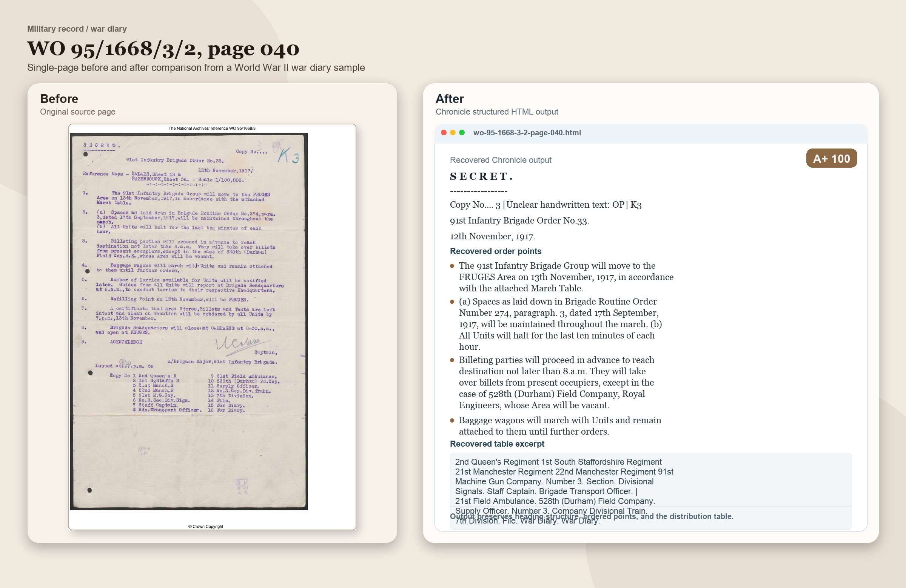
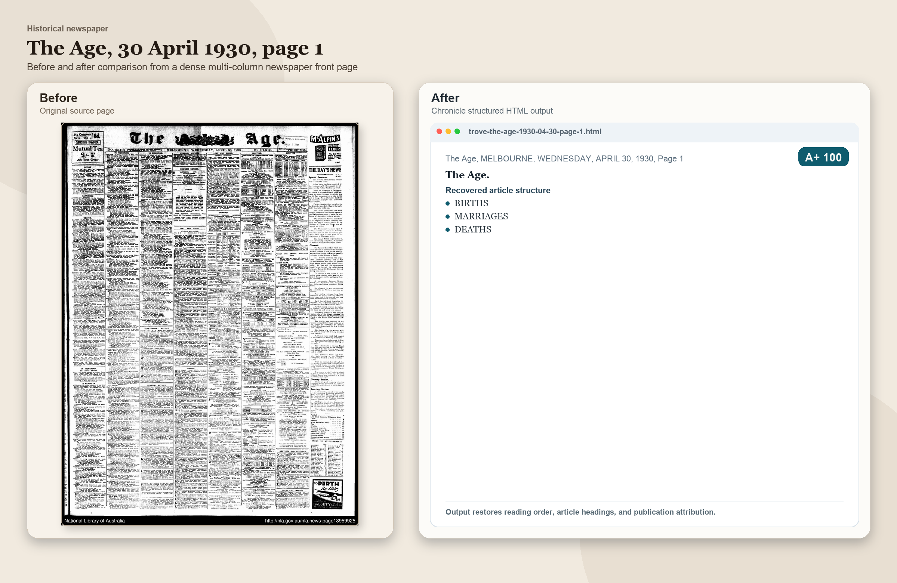
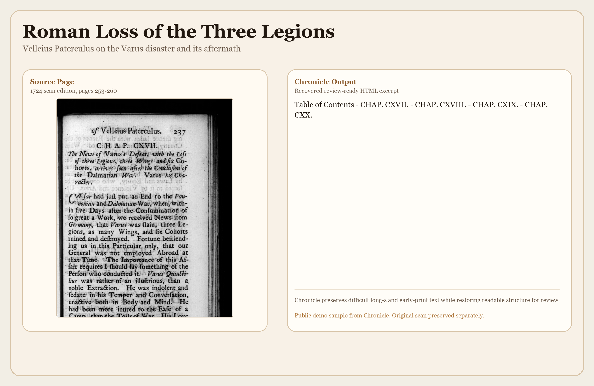
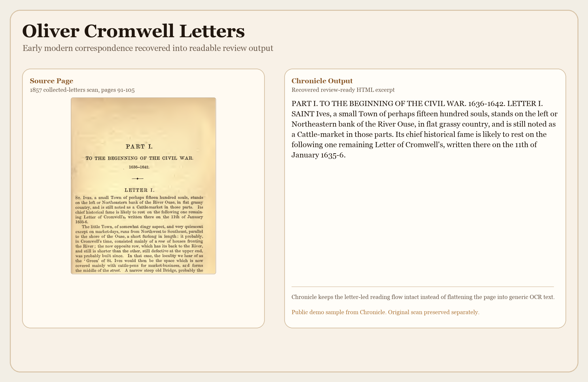

macOS
Download for Mac
This button is set up for the GitHub Releases asset path for the first public Mac build.
This link now points to the live GitHub Releases asset Chronicle.mac.zip.
Chronicle is a desktop tool for scans and source files that are degraded, crowded, visual, historical, handwritten, or simply painful to read in ordinary OCR workflows.
It is built for people who need faithful, review-ready output with better structure, reading order, and accessibility, not just a quick text dump.
Feedback is welcome through the GitHub issue tracker while dedicated public email channels are being stabilized.
Built using AI-assisted ("vibe-coded") workflows, with final integration, review, and testing directed by the author.
This page is ready to hold your public Mac and Windows links. Until the hosted files are final, the same buttons can route people to the launch inbox.
This button is set up for the GitHub Releases asset path for the first public Mac build.
This link now points to the live GitHub Releases asset Chronicle.mac.zip.
This button is set up for the GitHub Releases asset path for the first public Windows build.
This link now points to the live GitHub Releases asset Chronicle.windows.zip.
If someone is unsure which version they need, or a link fails, use the repository issue tracker for the current support path.
Temporary support path: GitHub Issues
Download the Mac or Windows version, then add your own API key inside Chronicle so processing stays tied to your account and usage.
Add messy PDFs, scans, reports, images, books, comics, manga, graphic novels, or archival pages. Chronicle is designed for the cases where ordinary OCR becomes tiring to clean up.
Chronicle aims to produce cleaner, more structured output for real checking. It helps with review. It does not replace review.
Chronicle began with family history. It was built to read difficult war diaries, newspapers, and archival material that ordinary OCR kept scrambling.
That work expanded into a broader document-recovery tool for people dealing with hard scans, broken reading order, and outputs that still need serious review.
For war diaries, manuscripts, newspapers, accession files, memoirs, and rough scans that ordinary OCR handles badly.
For people who need screen-reader-friendly HTML, clearer document structure, and output that is easier to review line by line.
For consultants, records staff, legal review work, family historians, and transcription-heavy workflows where caution matters.
Chronicle is strongest when the source is ugly and the stakes are practical: reading order, continuity, usable structure, and time saved in review.
It does not treat every document the same way. A newspaper page, a legal clause page, a military record, and a handwritten note do not behave alike, so Chronicle uses document-specific recovery logic rather than a one-size-fits-all pass.
This launch page uses semantic headings, keyboard-friendly controls, visible focus states, descriptive links, and public-safe image alt text.
Chronicle is designed to help produce cleaner reading order and more review-friendly output for screen reader and keyboard-based workflows.
Your API key stays local to your own machine, but document content is still processed by the provider you choose. Chronicle helps with workflow; it does not erase provider-side considerations.
Chronicle was built using AI-assisted ("vibe-coded") workflows, with final integration, review, and testing directed by the author.
Chronicle is a review tool, not a substitute for review. Important outputs still need to be checked against the source.
These are public-safe benchmark-based comparisons from actual Chronicle test pages. The images use descriptive alt text so the examples are meaningful for screen-reader users too.
This public set now includes Roman-source and Cromwell correspondence examples alongside the earlier military and newspaper cases.




If Chronicle helps your work, donations help fund ongoing development, testing, documentation, and future releases.
Non-commercial use is free. Paid licensing only applies to commercial, business, client-service, or paid professional use.
Free
For home use, students, educators, nonprofits, family historians, volunteer/community work, and other non-commercial use.
Paid license required
For paid professional work, consulting, client services, business operations, and commercial organizational use.
On request
If a business or organization needs Chronicle assessed before purchase, evaluation access and licensing questions can be routed through the repository issue tracker until a stable public contact channel is restored.
No. The website is the public front door. For the first release, the Mac and Windows buttons are prepared to point at GitHub Releases assets.
Yes. Chronicle is designed so each user can use their own provider key on their own machine. Free Gemini API keys may be fine for initial testing, but hard PDFs and long magazine-style jobs can still hit quota errors, so paid API billing is the safer choice for dependable use.
No. Cloudflare Pages can host a static accessible site well. The important part is the page we publish, which is why this site bundle uses semantic structure and keyboard support.
Yes. GitHub Releases is a practical first place to host the Mac and Windows ZIP files. The website can then link to those files when you are ready to publish it.
No. Chronicle is made to reduce cleanup and improve reviewability on difficult material. Human review still matters, especially for legal, medical, financial, or compliance-sensitive documents.
Yes. Chronicle was built using AI-assisted ("vibe-coded") workflows, with final integration, review, and testing directed by the author.
Chronicle can still make mistakes. Difficult documents can contain omissions, wrong joins, uncertain readings, or layout decisions that need human review.
That matters most for legal, medical, financial, safety-critical, and compliance-sensitive material. Chronicle can help prepare and structure these documents, but it should not be the sole basis for a final decision.
Feedback is welcome. Use this for general questions, evaluation requests, and public discussion.
Use this for download links, release assets, and current packaged builds.
Dedicated public email addresses are temporarily withheld until account setup and authentication are working reliably.